Speaker: Diagrams
Component Connector End Views
Speaker - Center Console (UQS)
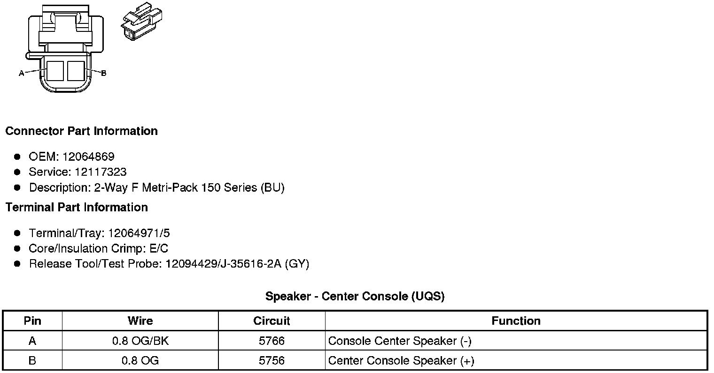
Speaker - Instrument Panel (UQS)
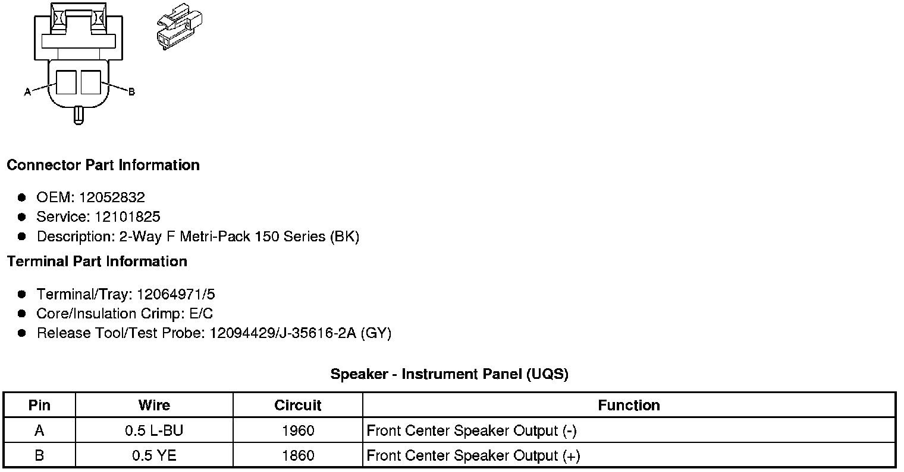
Speaker - Left A-Pillar Tweeter
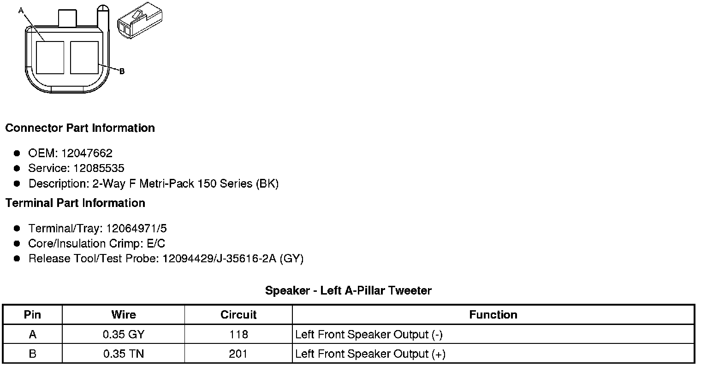
Speaker - Left D-Pillar (UQS)
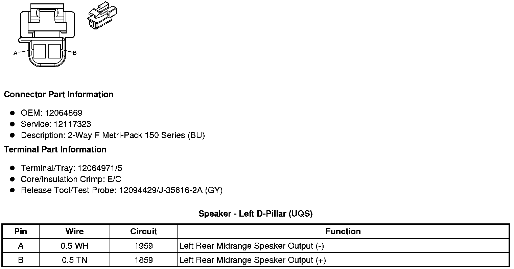
Speaker - Left Front Door
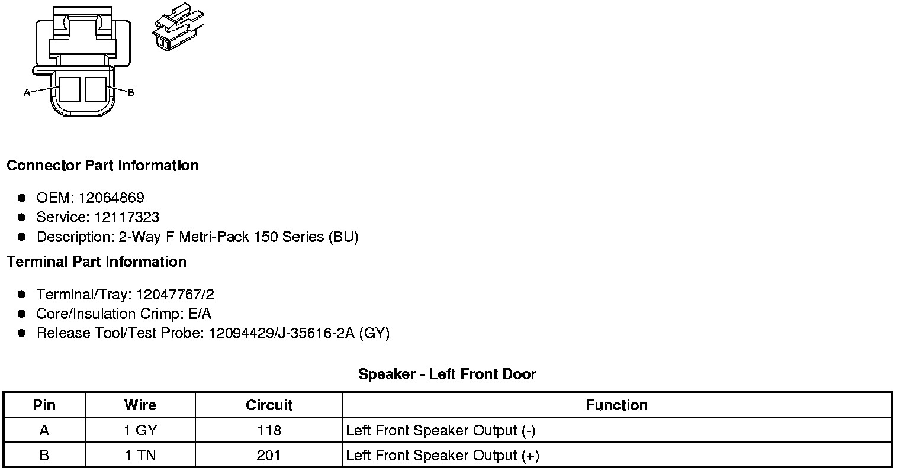
Speaker - Left Rear Door
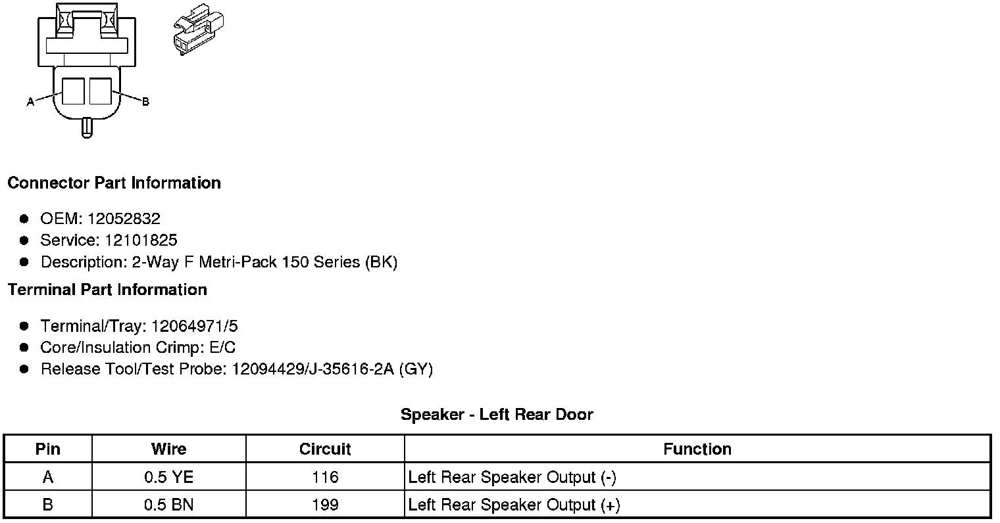
Speaker - Rear Subwoofer
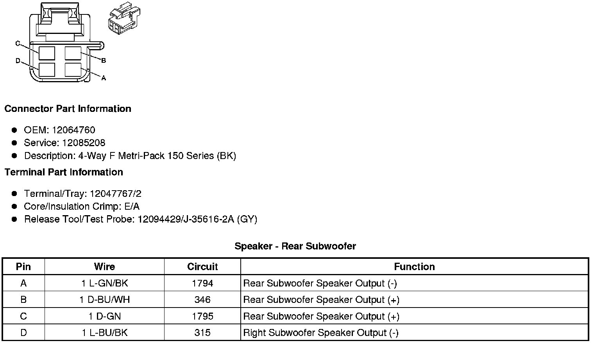
Speaker - Right Front Door
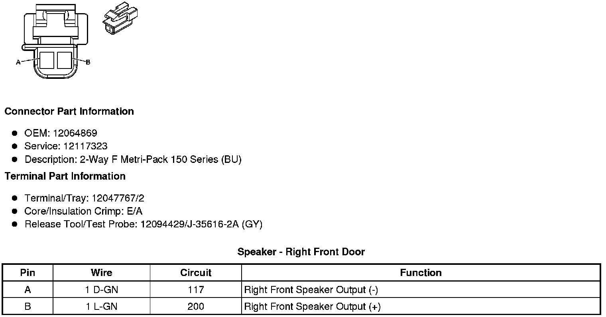
Speaker - Right A-Pillar Tweeter
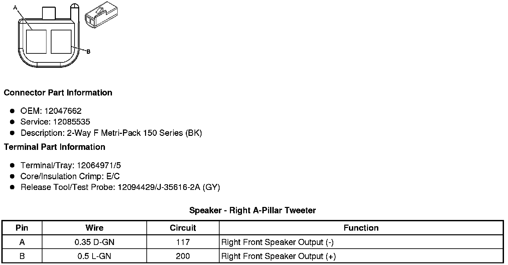
Speaker - Right D-Pillar (UQS)
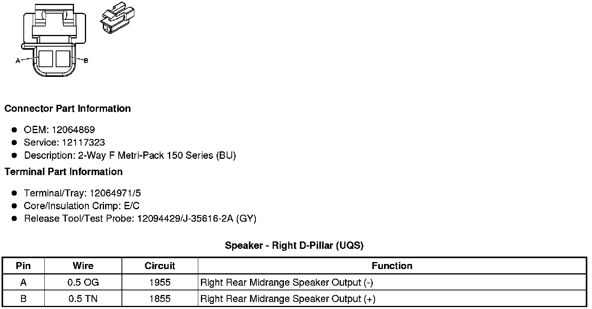
Speaker - Right Rear Door
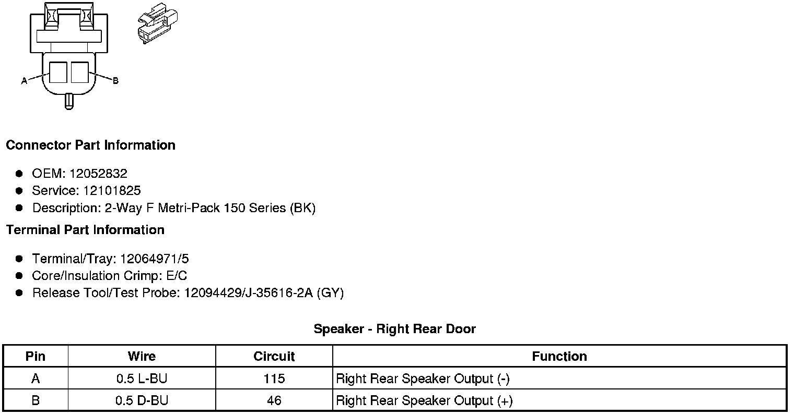